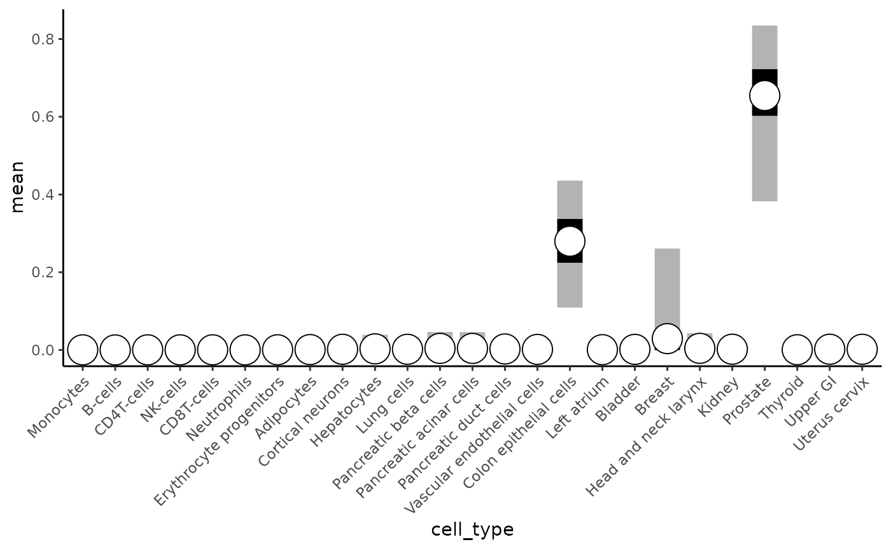
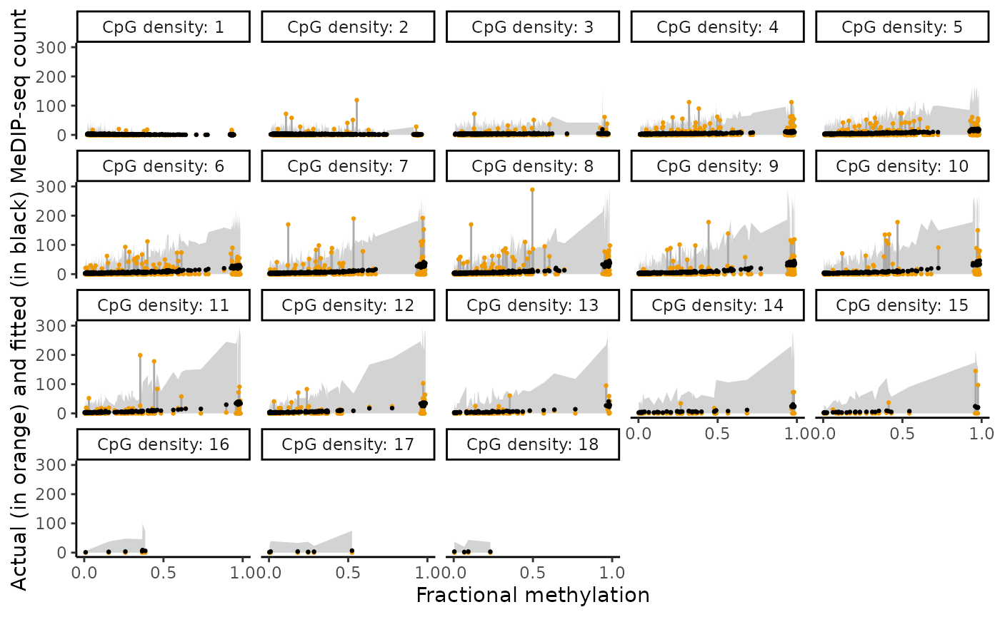

Cell type deconvolutiond of (cf)MeDIP-seq data with decemedip
Ning Shen
Department of Statistics, University of British Columbia;Centre for Molecular Medicine and Therapeutics, BC Children’s Hospital Research Institutening.shen.wk@gmail.com
how-to-use-decemedip.RmdCitation
If you use decemedip in published research, please cite:
Shen, Ning, and Keegan Korthauer. “decemedip: hierarchical Bayesian modeling for cell type deconvolution of immunoprecipitation-based DNA methylome” bioRxiv, forthcoming.
Installation
This package will be submitted to Bioconductor. For now, you can install the development version from GitHub:
# Install stable version from Bioconductor (once available)
# BiocManager::install("decemedip")
# Install development version from GitHub
remotes::install_github("nshen7/decemedip")After installation, load the decemedip package:
Background
Cell-free and bulk DNA methylation data obtained through MeDIP-seq
reflect a mixture of methylation signals across multiple cell types.
Decomposing these signals to infer cell type composition can provide
valuable insights for cancer diagnosis, immune response monitoring, and
other biomedical applications. However, challenges like
enrichment-induced biases and sparse reference data make this task
complex. The decemedip package addresses these challenges
through a hierarchical Bayesian framework that estimates cell type
proportions and models the relationship between MeDIP-seq counts and
reference methylation data.
decemedip couples a logit-normal model with a generalize additive model (GAM) framework. For each site in the reference panel, the input to the model is the fractional methylation levels for each cell type , the CpG density level and the MeDIP-seq read count , where is the total number of cell types. A unit simplex variable that follows a logit-normal prior, where , is included to describe the proportions of cell types in the reference panel while taking into account the correlations between these cell types.

Input Data
decemedip requires three primary inputs:
- Reference methylation matrix: A matrix of methylation levels for multiple cell types at selected CpG sites.
- CpG density: Information about CpG site density in the genome.
- MeDIP-seq read counts: Coverage values from the sample of interest.
Reference panel
Our package provides default reference matrices for hg19 and hg38
along with the corresponding CpG density information, as objects in
class SummarizedExperiment. The objects can be accessed by
calling data(hg19.ref.cts.se) and
data(hg19.ref.anc.se), or
data(hg38.ref.cts.se) and
data(hg38.ref.anc.se). By default, the main function
decemedip() applies hg19.ref.cts.se and
hg19.ref.anc.se as the reference panels. Please refer to
the manuscript for details of how the default reference panels were
constructed.
On a side note, we provide the function
makeReferencePanel() to allow user to build their own
reference panels, which only requires input of reference CpGs and
corresponded fractional methylation level matrix. The function computes
CpG density on its own. Note that the cell type-specific sites and
anchor sites need to be included in two
SummarizedExperiment objects to be inputs to the main
function decemedip(). See ?makeReferencePanel
for more information.
We show how the reference panel look like in the following chunks:
data(hg19.ref.cts.se)
print(hg19.ref.cts.se)
## class: RangedSummarizedExperiment
## dim: 2500 25
## metadata(0):
## assays(1): beta
## rownames(2500): cg18856478 cg20820767 ... cg01071459 cg20726993
## rowData names(4): probe label pos n_cpgs_100bp
## colnames(25): Monocytes_EPIC B-cells_EPIC ... Upper_GI Uterus_cervix
## colData names(0):
head(granges(hg19.ref.cts.se))
## GRanges object with 6 ranges and 4 metadata columns:
## seqnames ranges strand | probe label
## <Rle> <IRanges> <Rle> | <character> <character>
## cg18856478 chr1 43814358 * | cg18856478 Monocytes_EPIC hyper..
## cg20820767 chr1 45082840 * | cg20820767 Monocytes_EPIC hyper..
## cg14855367 chr3 191048308 * | cg14855367 Monocytes_EPIC hyper..
## cg25913761 chr15 90727560 * | cg25913761 Monocytes_EPIC hyper..
## cg21546950 chr1 77904032 * | cg21546950 Monocytes_EPIC hyper..
## cg14981189 chr10 5113871 * | cg14981189 Monocytes_EPIC hyper..
## pos n_cpgs_100bp
## <integer> <integer>
## cg18856478 43814358 7
## cg20820767 45082840 12
## cg14855367 191048308 1
## cg25913761 90727560 4
## cg21546950 77904032 1
## cg14981189 5113871 1
## -------
## seqinfo: 22 sequences from hg19 genome; no seqlengths
data(hg19.ref.anc.se)
print(hg19.ref.anc.se)
## class: RangedSummarizedExperiment
## dim: 1000 25
## metadata(0):
## assays(1): beta
## rownames(1000): 353534 76294 ... 73948 87963
## rowData names(7): probe pos ... avg_beta_rank n_cpgs_100bp
## colnames(25): Monocytes_EPIC B-cells_EPIC ... Upper_GI Uterus_cervix
## colData names(0):
head(granges(hg19.ref.anc.se))
## GRanges object with 6 ranges and 7 metadata columns:
## seqnames ranges strand | probe pos label
## <Rle> <IRanges> <Rle> | <character> <integer> <character>
## 353534 chr19 19496477 * | cg15264323 19496477 All-tissue U
## 76294 chr1 154193656 * | cg13576006 154193656 All-tissue U
## 300825 chr12 860787 * | cg13284045 860787 All-tissue U
## 369864 chr5 43514988 * | cg20545087 43514988 All-tissue U
## 247131 chr16 278788 * | cg06819375 278788 All-tissue U
## 308091 chr12 96429111 * | cg09725090 96429111 All-tissue U
## margin avg_beta avg_beta_rank n_cpgs_100bp
## <numeric> <numeric> <numeric> <integer>
## 353534 0.1 0.063240 70720.0 10
## 76294 0.1 0.013492 19877.5 7
## 300825 0.1 0.029155 36307.5 1
## 369864 0.1 0.038771 45387.5 6
## 247131 0.1 0.032970 39748.5 2
## 308091 0.1 0.076555 77269.0 7
## -------
## seqinfo: 22 sequences from hg19 genome; no seqlengthsFit the Bayesian Model
The main function decemedip() fits the decemedip model.
It allows two types of input:
- A BAM file of the sample MeDIP-seq data, or
- read counts of the reference CpG sites of the sample.
We provide instructions for both input types as follows.
Input with a BAM file
sample_bam_file <- "path/to/bam/files"
paired <- TRUE # whether the sequencing is paired-end
output <- decemedip(sample_bam_file = sample_bam_file,
paired = paired,
cores = 4)PS: By default, the decemedip() function uses a hg19
reference panel. But users may add the arguments
ref_cts = hg38.ref.cts.se, ref_anc = hg38.ref.anc.se to
apply read counts extraction on hg38 data.
Input with read counts
We use built-in objects of the package that contains read counts of
the prostate tumor patient-derived xenograft (PDX) samples from the
Berchuck et al. 2022 [1] study, pdx.counts.cts.se and
pdx.counts.anc.se, to demonstrate the output and
diagnostics in this vignette.
[1] Berchuck JE, Baca SC, McClure HM, Korthauer K, Tsai HK, Nuzzo PV, et al. Detecting neuroendocrine prostate cancer through tissue-informed cell-free DNA methylation analysis. Clinical Cancer Research. 2022;28(5):928–938.
We extract the sample LuCaP_147CR from this example
dataset for follwing illustration:
counts_cts <- assays(pdx.counts.cts.se)$counts[,'LuCaP_147CR'] # read counts of cell type-specific CpGs of the sample 'LuCaP_147CR'
counts_anc <- assays(pdx.counts.anc.se)$counts[,'LuCaP_147CR'] # read counts of anchor CpGs of the sample 'LuCaP_147CR'Due to the vignette running time limit by Bioconductor, we only run
300 iterations (iter = 300) for the purpose of
demonstration, which causes the warning of
Bulk Effective Samples Size (ESS) is too low. In regular
cases, we recommend to run 2000 iterations (the default), or at least
1000 iterations for a stable posterior inference.
output <- decemedip(counts_cts = counts_cts,
counts_anc = counts_anc,
diagnostics = TRUE,
cores = 4,
iter = 200)
## MCMC converged with seed 2024The output of decemedip() is a list containing two
elements:
names(output)
## [1] "data_list" "posterior"-
data_list: An organized list of variables used as input to the Stan posterior sampling function. -
posterior: Anstanfitobject produced by Stan representing the fitted posteriors.
Checking model outputs
Cell type proportions
After running the model, you may extract and save the summary of
fitted posteriors using the monitor() and
extract() functions provided by the RStan
package. See documentation of RStan for details of these
functions.
Extract the fitted posterior of cell type proportions ():
smr_pi.df <- getSummaryOnPi(output$posterior)
head(smr_pi.df)
## cell_type mean se_mean sd 2.5% 25% 50% 75%
## pi[1] Monocytes_EPIC 0.00041 9.9e-05 0.00136 8.7e-14 1.2e-07 2.3e-06 7.4e-05
## pi[2] B-cells_EPIC 0.00021 4.6e-05 0.00055 2.7e-13 5.4e-08 4.0e-06 1.0e-04
## pi[3] CD4T-cells_EPIC 0.00042 1.2e-04 0.00143 2.4e-13 9.9e-08 4.6e-06 8.1e-05
## pi[4] NK-cells_EPIC 0.00040 1.9e-04 0.00262 7.0e-14 2.7e-08 1.4e-06 3.0e-05
## pi[5] CD8T-cells_EPIC 0.00049 1.8e-04 0.00264 2.3e-13 8.7e-08 2.2e-06 4.1e-05
## pi[6] Neutrophils_EPIC 0.00035 1.0e-04 0.00144 1.0e-13 2.8e-08 2.2e-06 5.0e-05
## 97.5% n_eff Rhat valid
## pi[1] 0.0043 162 1 1
## pi[2] 0.0017 139 1 1
## pi[3] 0.0050 142 1 1
## pi[4] 0.0031 175 1 1
## pi[5] 0.0049 215 1 1
## pi[6] 0.0044 205 1 1- Summary Statistics Columns:
-
cell_type: The name of the parameter or variable being analyzed. -
mean: The posterior mean, representing the point estimate of the parameter. -
se_mean: The standard error of the mean, calculated as sd / sqrt(n_eff), indicating precision of the mean estimate. -
sd: The posterior standard deviation, representing the spread or uncertainty of the parameter estimate. -
2.5%,25%,50%(median),75%,97.5%: Percentiles of the posterior distribution, providing a summary of parameter uncertainty. These define the 95% credible interval (2.5% to 97.5%).
-
- Diagnostics Columns:
-
n_eff: The effective sample size, indicating how many independent samples the chain produced after accounting for autocorrelation. -
Rhat: The potential scale reduction factor, measuring chain convergence. Values close to 1.00 suggest good convergence. -
valid: A flag indicating whether diagnostic checks (e.g., Rhat and n_eff) passed for this parameter (1 = passed, 0 = potential issues).
-
Plotting out the fitted cell type proportions with credible intervals:
labels <- gsub('_', ' ', smr_pi.df$cell_type)
labels <- gsub('(.*) EPIC', '\\1', labels)
smr_pi.df |>
mutate(cell_type = factor(cell_type, labels = labels)) |>
ggplot(aes(cell_type, mean)) +
geom_linerange(aes(ymin = `2.5%`, ymax = `97.5%`),
position = position_dodge2(width = 0.035),
linewidth = 7, alpha = 0.3) +
geom_linerange(aes(ymin = `25%`, ymax = `75%`),
position = position_dodge2(width = 0.035),
linewidth = 7, alpha = 1) +
geom_point(position = position_dodge2(width = 0.035),
fill = 'white', shape = 21, size = 8) +
theme_classic() +
theme(axis.text.x = element_text(angle = 45, hjust = 1))
Fitted relationship between fractional methylation and MeDIP-seq counts
Note that this plot is only accessible when diagnostics
is set toTRUE in the decemedip() function. The
actual read counts (orange) and the fitted counts predicted by the GAM
component (black) are shown in the figure across varying levels of CpG
density. Grey area represents the 95% credible intervals of the
predicted counts. `CpG density: x’ means that there are x CpGs in the
100-bp window surrounding the CpG.
plotDiagnostics(output, plot_type = "y_fit") +
ylim(0, 300)
Conclusion
The decemedip package provides a robust framework for
cell type deconvolution from MeDIP-seq data. By following this vignette,
users can apply the method to their own datasets, extract key model
outputs, and generate diagnostic plots for analysis.
Session Info
sessionInfo()
## R version 4.5.0 (2025-04-11)
## Platform: x86_64-pc-linux-gnu
## Running under: Ubuntu 24.04.2 LTS
##
## Matrix products: default
## BLAS: /usr/lib/x86_64-linux-gnu/openblas-pthread/libblas.so.3
## LAPACK: /usr/lib/x86_64-linux-gnu/openblas-pthread/libopenblasp-r0.3.26.so; LAPACK version 3.12.0
##
## locale:
## [1] LC_CTYPE=C.UTF-8 LC_NUMERIC=C LC_TIME=C.UTF-8
## [4] LC_COLLATE=C.UTF-8 LC_MONETARY=C.UTF-8 LC_MESSAGES=C.UTF-8
## [7] LC_PAPER=C.UTF-8 LC_NAME=C LC_ADDRESS=C
## [10] LC_TELEPHONE=C LC_MEASUREMENT=C.UTF-8 LC_IDENTIFICATION=C
##
## time zone: UTC
## tzcode source: system (glibc)
##
## attached base packages:
## [1] stats4 stats graphics grDevices utils datasets methods
## [8] base
##
## other attached packages:
## [1] rstan_2.32.7 StanHeaders_2.32.10
## [3] decemedip_0.99.1 testthat_3.2.3
## [5] ggplot2_3.5.2 dplyr_1.1.4
## [7] SummarizedExperiment_1.38.1 Biobase_2.68.0
## [9] GenomicRanges_1.60.0 GenomeInfoDb_1.44.0
## [11] IRanges_2.42.0 S4Vectors_0.46.0
## [13] BiocGenerics_0.54.0 generics_0.1.4
## [15] MatrixGenerics_1.20.0 matrixStats_1.5.0
## [17] BiocStyle_2.36.0
##
## loaded via a namespace (and not attached):
## [1] RColorBrewer_1.1-3 rstudioapi_0.17.1 jsonlite_2.0.0
## [4] magrittr_2.0.3 farver_2.1.2 rmarkdown_2.29
## [7] fs_1.6.6 BiocIO_1.18.0 ragg_1.4.0
## [10] vctrs_0.6.5 memoise_2.0.1 Rsamtools_2.24.0
## [13] RCurl_1.98-1.17 usethis_3.1.0 htmltools_0.5.8.1
## [16] S4Arrays_1.8.0 progress_1.2.3 curl_6.2.2
## [19] SparseArray_1.8.0 sass_0.4.10 bslib_0.9.0
## [22] htmlwidgets_1.6.4 desc_1.4.3 httr2_1.1.2
## [25] cachem_1.1.0 GenomicAlignments_1.44.0 mime_0.13
## [28] lifecycle_1.0.4 pkgconfig_2.0.3 Matrix_1.7-3
## [31] R6_2.6.1 fastmap_1.2.0 GenomeInfoDbData_1.2.14
## [34] shiny_1.10.0 digest_0.6.37 ps_1.9.1
## [37] AnnotationDbi_1.70.0 rprojroot_2.0.4 pkgload_1.4.0
## [40] textshaping_1.0.1 RSQLite_2.3.11 labeling_0.4.3
## [43] filelock_1.0.3 MEDIPS_1.60.0 httr_1.4.7
## [46] abind_1.4-8 compiler_4.5.0 remotes_2.5.0
## [49] bit64_4.6.0-1 withr_3.0.2 inline_0.3.21
## [52] BiocParallel_1.42.0 DBI_1.2.3 QuickJSR_1.7.0
## [55] pkgbuild_1.4.7 R.utils_2.13.0 biomaRt_2.64.0
## [58] sessioninfo_1.2.3 rappdirs_0.3.3 DelayedArray_0.34.1
## [61] rjson_0.2.23 gtools_3.9.5 DNAcopy_1.82.0
## [64] loo_2.8.0 BH_1.87.0-1 tools_4.5.0
## [67] httpuv_1.6.16 R.oo_1.27.1 glue_1.8.0
## [70] callr_3.7.6 restfulr_0.0.15 promises_1.3.2
## [73] grid_4.5.0 gtable_0.3.6 BSgenome_1.76.0
## [76] R.methodsS3_1.8.2 preprocessCore_1.70.0 hms_1.1.3
## [79] xml2_1.3.8 XVector_0.48.0 pillar_1.10.2
## [82] stringr_1.5.1 later_1.4.2 BiocFileCache_2.16.0
## [85] lattice_0.22-6 rtracklayer_1.68.0 bit_4.6.0
## [88] tidyselect_1.2.1 Biostrings_2.76.0 miniUI_0.1.2
## [91] knitr_1.50 gridExtra_2.3 bookdown_0.43
## [94] xfun_0.52 brio_1.1.5 devtools_2.4.5
## [97] stringi_1.8.7 UCSC.utils_1.4.0 yaml_2.3.10
## [100] evaluate_1.0.3 codetools_0.2-20 RcppEigen_0.3.4.0.2
## [103] tibble_3.2.1 BiocManager_1.30.25 cli_3.6.5
## [106] RcppParallel_5.1.10 xtable_1.8-4 systemfonts_1.2.3
## [109] processx_3.8.6 jquerylib_0.1.4 Rcpp_1.0.14
## [112] dbplyr_2.5.0 png_0.1-8 XML_3.99-0.18
## [115] parallel_4.5.0 rstantools_2.4.0 ellipsis_0.3.2
## [118] pkgdown_2.1.2 blob_1.2.4 prettyunits_1.2.0
## [121] profvis_0.4.0 bayesplot_1.12.0 urlchecker_1.0.1
## [124] bitops_1.0-9 scales_1.4.0 purrr_1.0.4
## [127] crayon_1.5.3 rlang_1.1.6 cowplot_1.1.3
## [130] KEGGREST_1.48.0